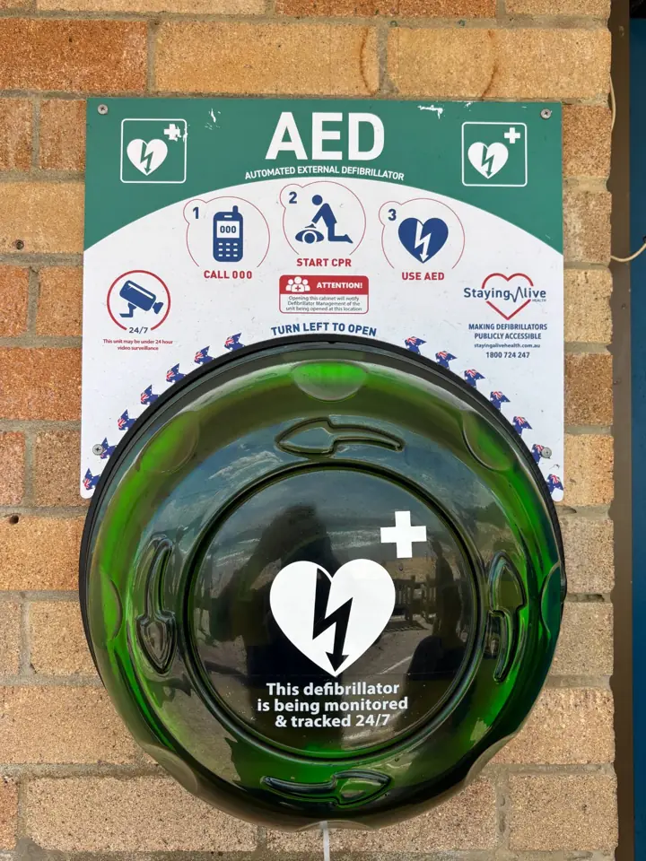

Defibrillator & CPR
Call 000Put it on speaker. The operator will talk you through CPR.
Where it is

Marine Parade, on the brick wall of the lifeguard building, between the steps and the blue door, next to the glass doors of the Manly Council Lifeguards office.
Look for the round green cabinet under the green AED sign.
The lifeguards' office is upstairs in the same building. If they're on duty, send someone up to get them.
Open the cabinet
Twist the green dome to the left (anticlockwise) and lift it off. No key, no code.
Opening it alerts the people who look after it. That's what it's for, so don't hesitate.
What to do
-
Call 000
Or 112 if your phone shows no signal. Send someone to fetch the defibrillator while you stay with the person. -
Start CPR
If they don't respond and aren't breathing normally:- Get them out of the water, on their back on firm ground.
- Push hard and fast in the centre of the chest: about 2 a second, a third of the chest's depth.
- 30 pushes, then 2 breaths if you're trained and willing. If not, just keep pushing.
- Swap with someone every couple of minutes, without stopping.
-
Use the defibrillator
- Open it or press the power button. It talks you through every step.
- Bare the chest and wipe it dry. Swimmers are wet, and the pads won't stick on wet skin.
- Stick the pads where the pictures show: one below the right collarbone, one on the left side below the armpit.
- Nobody touches the person while it checks or shocks. It only shocks if it needs to: you can't get it wrong.
- Go straight back to CPR when it says so. Keep the pads on until the paramedics take over.
Watch it before you need it
How to use a defibrillatorSt John Ambulance NSW, on YouTube. Needs signal.This page is a reminder, not training. Always follow the 000 operator and the defibrillator's voice.
Cabinet empty or damaged? Call Staying Alive Health on 1800 724 247 (the number on the sign) so it gets restocked.